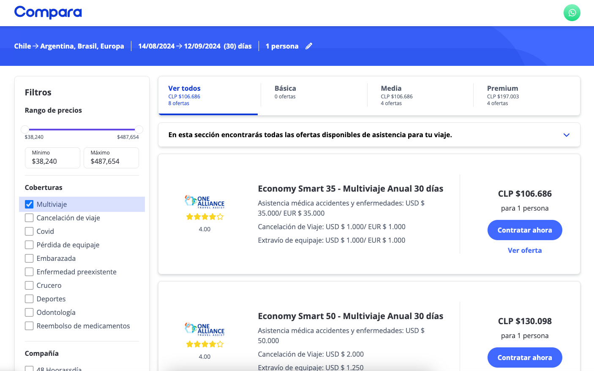

Conoce la nueva Asistencia Multiviaje
Y las ventajas de contratarla.
Y las ventajas de contratarla.
En Compara somos fans de muchas cosas, pero hay una que seguro tú también lo eres, y es viajar.
Conocer nuevas culturas, organizar el mapa de recorrido, comer comidas exóticas y hacerte algún amigo de otro país que prometerás visitar en algún momento. Todo esto y más, hacen al placer de viajar, pero como somos fans de la diversión, también lo somos de los cuidados.
¿Viste como cuidas a tu mascota de que no le suceda nada? Somos así, pero contigo. ¿Cómo?, te lo cuento a continuación.
Siempre que haya un riesgo de que algo suceda, si aquí nos ponemos modo madre, hay un cuidado que se puede tener para que esto no pase o si pasa que sea de la mejor forma posible.
En Compara tenemos una Asistencia Multiviaje, porque para la gente fan le creamos productos bacanes. Pero, ¿en qué consiste? Muy simple, puedes contratar una sola vez tu seguro y que te cubra por varios viajes, ¿lo mejor? Es más económico que contratar varios por separado.

Te damos un ejemplo, así además de inspirarte, te enseñamos como usarlo.
Imagina que estabas muy emocionado con la Copa América y los Juegos Olímpicos y sacaste pasajes para disfrutar de ambos eventos deportivos, pero estos son en dos países distintos, que a su vez tienen muchos requisitos en cuanto al ingreso. Para no perderte entre papeles y reservas, puedes adquirir una Asistencia Multiviaje que contratas por 1 año completo y que te permitirá realizar múltiples viajes en ese año sin importar la cantidad que hagas, y a un precio más económico. De esta manera solo deberás tener en cuenta que cada viaje deberá ser de máximo 30, 60 o 90 días consecutivos, según lo que compres (en algunos casos existen hasta de 120 días).
¿No es maravillo?
Pues sí, lo es. Te ahorras tiempo y dinero, un trámite menos en esta vida adulta y burocrática.
Y como detrás de toda buena idea, siempre hay humanos llevándolo a cabo, hablamos con Rodri para que nos cuente más sobre este producto. Nos dijo:
El Seguro Multiviaje, es un producto diferencial. Lo pensamos luego de ver la necesidad en nuestros clientes. Muchos de ellos viajan 2, 3 o 4 veces por año, así que decidimos brindarles una solución en cuanto a lo económico, como también a lo administrativo
También le preguntamos si había que avisar cada vez que se viajaba, o dar una especie de “alta”, ¿Saben que nos respondió? Que ¡no! Es muy práctica la Asistencia Multiviaje. La cosa es así:
“No hace falta que avises cada vez que viajas, solamente si te sucede algo durante alguna de tus estadías. Te comunicas con el seguro y listo”.
Nuestro consejo es el siguiente, saca tu Asistencia Multiviaje y de ahí empiezas a ver a qué lugares te gustaría ir. Es como un incentivo, ya lo tienes, ahora solo queda viajar.
Síguenos para más consejos, te prometemos que no te defraudaremos.
 Seguros
SegurosEl anuncio del posible impacto del Asteroide 2024 YR4 en la Tierra nos hizo recordar la película Don’t Look Up y analizar ciertos factores…
 Seguros
SegurosPodemos decir que el Festival de Viña es un evento que nos marca que estamos en verano, que cuando lo veamos seguro estamos tomando unas…
 Seguros
SegurosEl crecimiento de los autos eléctricos está siendo cada vez mayor, ya no nos sorprende ver estaciones de carga para estos, ni que algún…